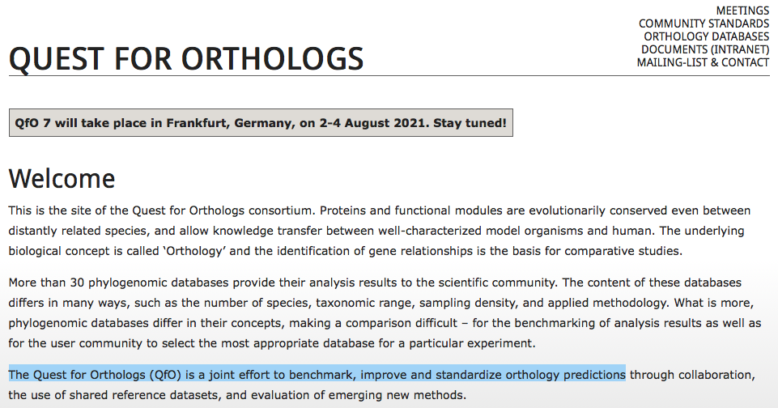
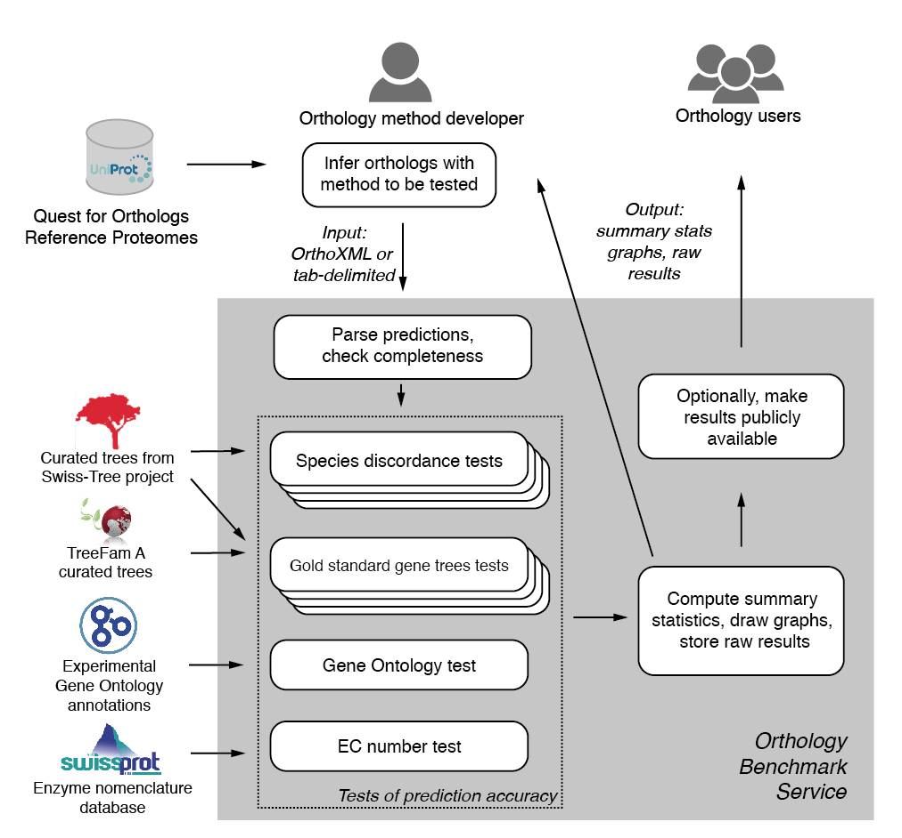
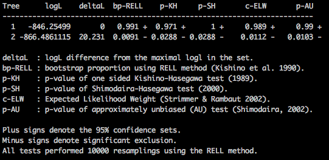

fDOG
Feature-aware Directed OrtholoG search
22.03.2021
Vinh Tran
Orthology
Homology

- Paralogs <- duplication
- Orthologs <- speciation
Applications


Mallo D. et al (2016), Syst Biol
RBH-based method

The origin of fDOG
HaMStR

HaMStR

+

fDOG
How good is fDOG
Benchmark data

- 78 taxa QfO 2018
- Human as reference species
- 20.996 human proteins as seed sequences
Benchmark method


Result
- 78 taxa QfO 2018
- Human as reference species
- 20.996 human proteins as seed sequences


How meaningful are the core ortholog groups
... in reflecting the species relationship
-
Topology test with IQ-TREE
(Topology rejected (-) when p-AU < 0.05, otherwise accepted (+))
-
18,067 core groups with more than 3 sequences

| Approach | Accepted | Rejected |
|---|---|---|
| No correction | 11,707 (64.80%) | 6,360 (35.20%) |
| Benjamini + Hochberg (BH) correction | 13,625 (75.41%) | 4,442 (24.59%) |
| Bonferroni correction | 16,204 (88.69%) | 2,043 (11.31%) |
How fast is fDOG
| Data set | Core compilation | Ortholog search | FAS calculation |
|---|---|---|---|
| 20,995 proteins (*) | 19 hrs | 67.5 hrs | 21 hrs |
| Q8WZ42 (**) | 54 hrs | 0.2 hrs | 20.5 hrs |
(*) fdogs.run using 64 CPUs on compute17 (2x AMD EPIC 7601 2.2Ghz, 32 cores)
(**) fdog.run using 1 CPU on compute12 (intel i7-6700K 4.0Ghz)
Get protein sequence


Get protein annotation


Get orthologous group


Run for multiple seed proteins


Other use cases

- Get sequence info from different databases (e.g. NCBI, PDB,...)
- Perform sequence alignment with e.g. MAFFT, Clustal, T-Coffee, etc.
- Analyse population genetics or phylogenetics


Editors for Python
The Jupiter Notebook


Links